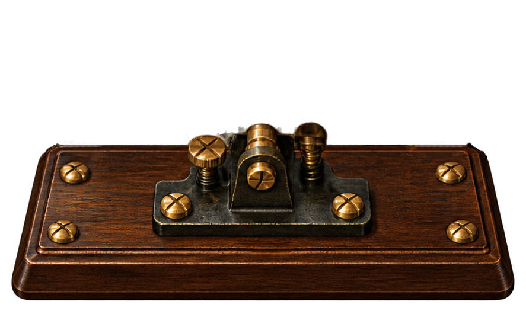
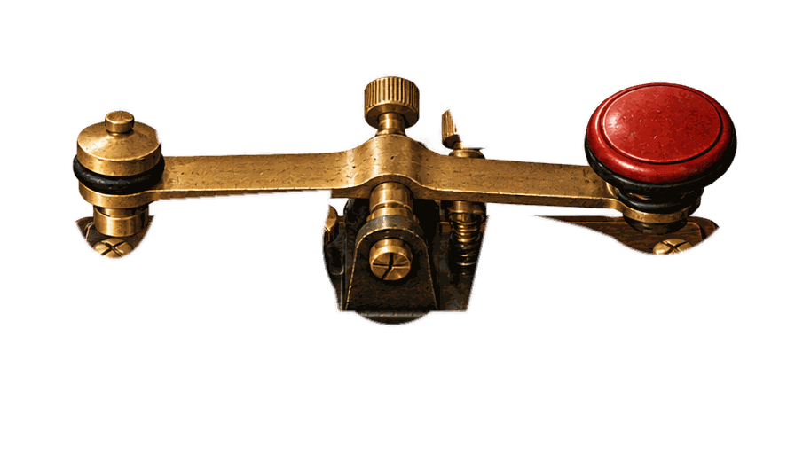

AREA NORDEsposizione · 1892
Inventario
✦ Punti 100◉ Lire 100
ESPOSIZIONE INTERNAZIONALE DI GENOVA · 1892
Ambiente interno di prova · Fase 2
Il Gioco dei Bussolotti
NormaleOperatorePunti partita: 0
Messaggio 1


ESPOSIZIONE INTERNAZIONALE DI GENOVA · 1892
Ambiente interno di prova · Fase 2

